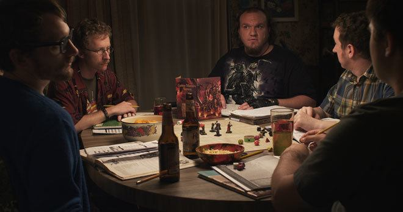

Welcome to the world of Dungeons and Dragons
It originated in Lake Geneva in Wisconssin by a man name Gary Gygax. This single game took the 70's and 80's by storm. He then produced several more editions under the name TSR
Eventually he sold it to Wizards of the Coast and unfortunatly during a wave in America called the Satanic Panic Dungeons and dragons seemed to disappear from the sight of modern day pop culture. It wasn't until a group called Critical Role came out where it was once again put back into mainstream media.